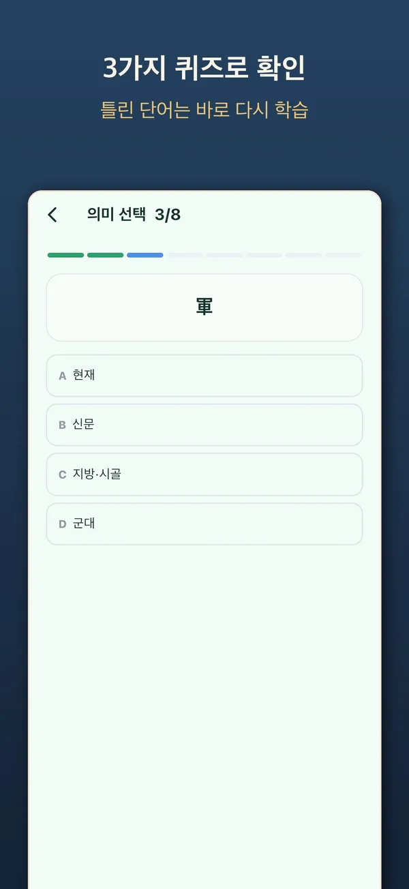
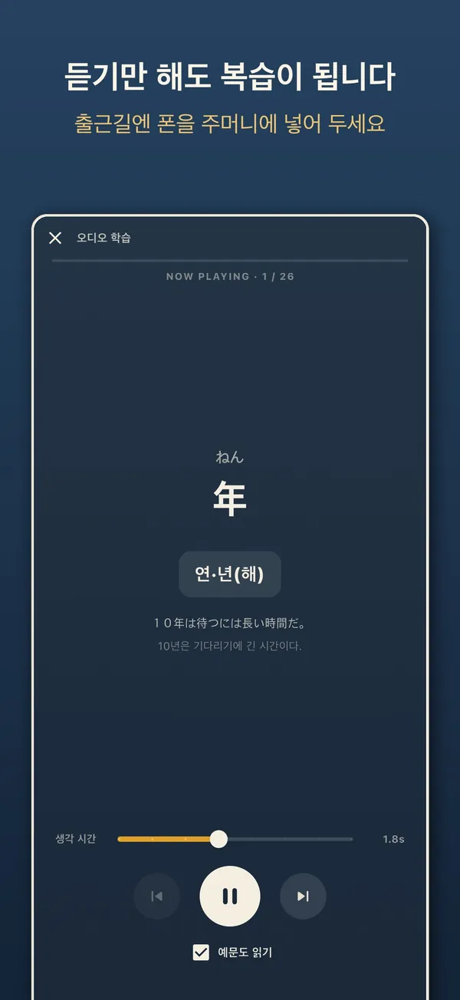
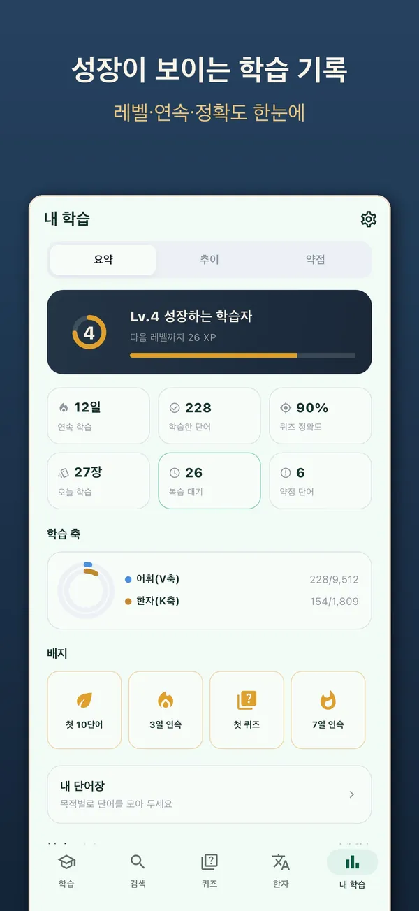
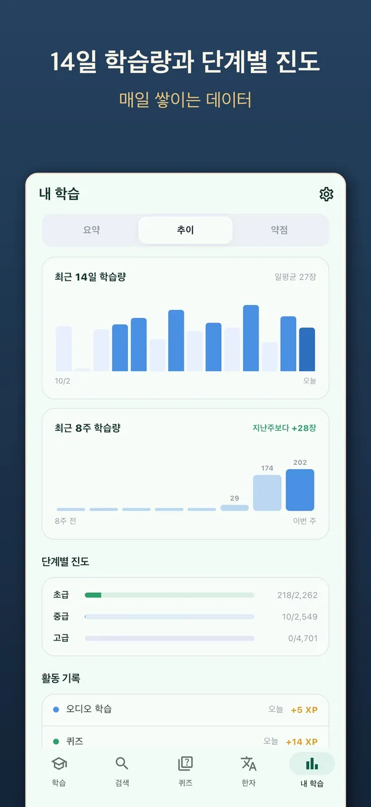
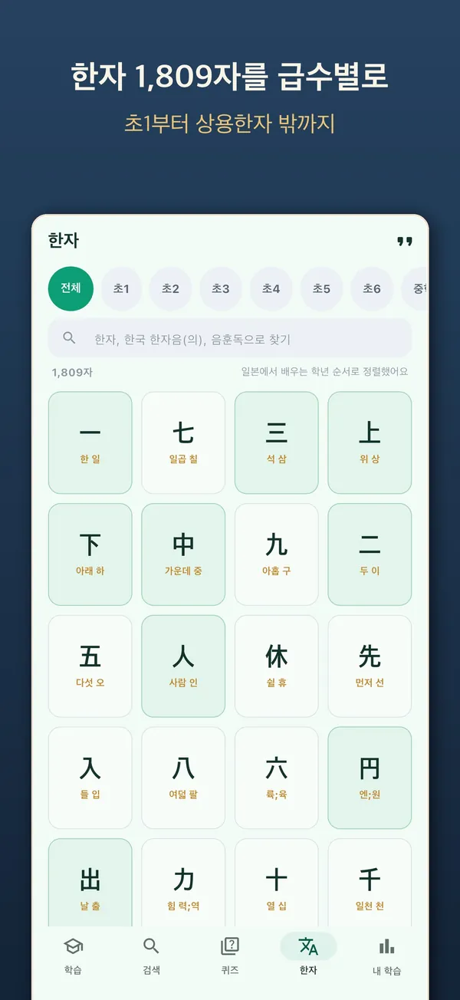
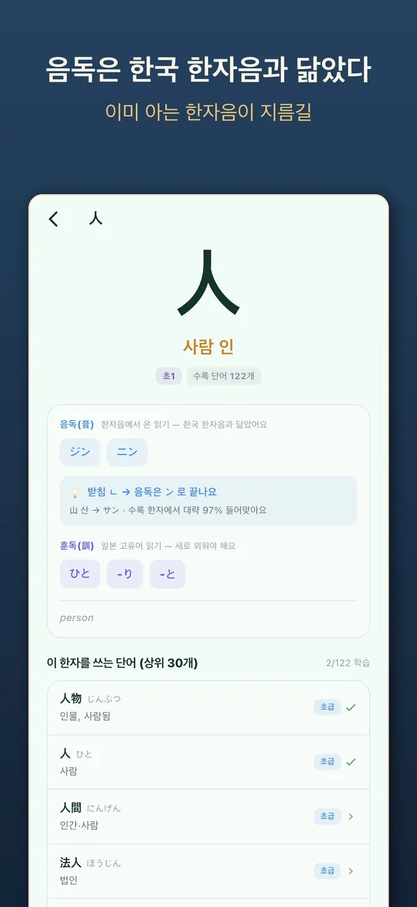

아는 한자음으로,
일본어 단어를 더 빨리
Japanese vocabulary
for Korean speakers
韓国語話者のための
日本語単語アプリ
일본어 단어 9,511개 중 5,310개는 한국 한자음으로 뜻이 통합니다. 아는 단어는 빠르게 확인하고 넘어가고, 한자는 같은데 뜻이 다른 함정 단어는 따로 짚어 줍니다. 하루 분량만큼, 자주 쓰는 순서로. 9,511 Japanese words for people who already speak Korean — 5,310 of them can be understood through Korean Hanja readings, so you confirm what you already know and spend your time on the rest. 韓国語を話す人のための日本語単語9,511語。そのうち5,310語は韓国の漢字音で意味が通じるため、知っている単語はすばやく確認し、残りの学習に時間を使えます。


무료 · 광고 포함 · 프리미엄 이용권은 선택 Free · Contains ads · Korean only 無料・広告あり・韓国語のみ
This app is built for Korean speakers learning Japanese, so every menu and meaning is in Korean. For the full feature list, switch to KO at the top.
このアプリは日本語を学ぶ韓国語話者向けのため、メニューと意味はすべて韓国語です。詳しい機能は上の KO に切り替えるとご覧いただけます。
일본어 한자어는 한국 한자음과 닮았습니다
단어마다 한국 한자음으로 뜻이 그대로 통하는지, 짐작이 어려운지, 아니면 같은 한자인데 뜻이 다른지 구분해 두었습니다. 한자음은 뜻을 알려 줄 뿐이라, 일본어 읽기는 따로 익힙니다.
카드, 퀴즈, 오디오, 한자까지Screens (in Korean)アプリ画面（韓国語）
옆으로 넘겨 실제 화면을 보세요.Swipe through the actual screens.横にスクロールして実際の画面をご覧ください。






하루 분량씩, 끝까지
히라가나·가타카나를 읽을 수 있다면 바로 시작할 수 있습니다.
오늘 할 분량만
초급·중급·고급 3단계를 29장, 280개 유닛으로 나눠 자주 쓰는 순서대로 하루 분량씩 공부합니다.
한자음 스캔
한국 한자음으로 뜻이 통하는 단어를 한 화면에 9개씩 펼쳐 모르는 것만 골라냅니다. 아는 단어는 뜻 카드를 건너뛰고, 읽기는 그대로 익힙니다.
뜻·읽기·예문을 한 장에
모든 단어에 한국어 뜻과 예문이 있고, 한국 한자음도 함께 보여 줍니다. 복습 일정은 FSRS 간격 반복으로 잡습니다.
함정 단어
한자는 같은데 한국어와 뜻이 다른 단어 99개를 따로 짚어 줍니다. 오늘의 함정 단어와 함정 판별 퀴즈도 있습니다.
퀴즈 5종
뜻, 읽기, 빈칸 채우기, 듣기, 함정 판별. 틀린 단어는 바로 다시 나옵니다.
듣기만 해도 복습
오디오 학습을 켜 두면 화면을 꺼도 단어와 예문을 읽어 줍니다. 출퇴근길에 휴대폰을 주머니에 넣어 두세요.
한자 1,809자
초등 1학년 한자(10급)부터 상용한자(2급)와 그 밖의 한자까지, 일본 한자검정 급수별로 정리했습니다. 음독·훈독, 한국 한자음, 그 한자를 쓰는 단어를 한 화면에서 봅니다.
사자성어 136개
일본어로 쓰는 사자성어를 한국 한자음 독음과 뜻으로 함께 익힙니다.
학습 기록과 내 단어장
레벨·연속 학습일·정확도, 14일 학습량과 단계별 진도를 확인하고, 외우기 어려운 단어는 나만의 단어장에 모아 둡니다.
단어와 한자는 모두 무료입니다
프리미엄 이용권은 1개월·1년 단위로 구매하며 자동으로 갱신되지 않습니다. 광고만 없애고 싶다면 앱에서 모은 코인으로도 광고를 끌 수 있습니다.
무료
광고 포함
- 일본어 단어 9,511개 · 한자 1,809자 전부
- 한자음 스캔 · 퀴즈 5종 · 오디오 학습
- 사자성어 136개 · 학습 기록
- 앱에서 모은 코인으로 광고 제거
프리미엄
1개월 · 1년 이용권
- 배너·전면 광고 완전 제거
- 세션당 카드 수 무제한
- 세션 자동 반복 학습
- 나만의 단어장 무제한
자주 묻는 질문
히라가나와 기초 문법을 먼저 알아야 하나요?
히라가나·가타카나는 읽을 수 있어야 합니다. 이 앱은 단어 학습에 집중하며, 글자나 문법을 처음부터 가르치는 입문 과정은 아닙니다.
JLPT 어느 수준까지 다루나요?
초급은 N5, 중급은 N4, 고급은 N3에 해당하는 수준으로 나눴습니다. 수준 표시는 참고용입니다.
계정이 필요한가요?
아니요. 회원가입이나 로그인 없이 쓸 수 있습니다. 학습 기록은 기기에 저장됩니다.
아이폰에서도 쓸 수 있나요?
네. 구글플레이와 앱스토어 모두에서 받을 수 있습니다.
잘못된 단어나 독음을 발견했어요.
해당 단어와 문제점을 teamstar13000@gmail.com으로 보내 주세요. 모두 읽고, 확인되면 다음 업데이트에 반영합니다.
오늘 분량부터 시작해 보세요Start with today's set今日の分から始めましょう
무료로 설치하고 이미 아는 한자음부터 확인해 보세요.Free to install · Korean only無料・韓国語のみ